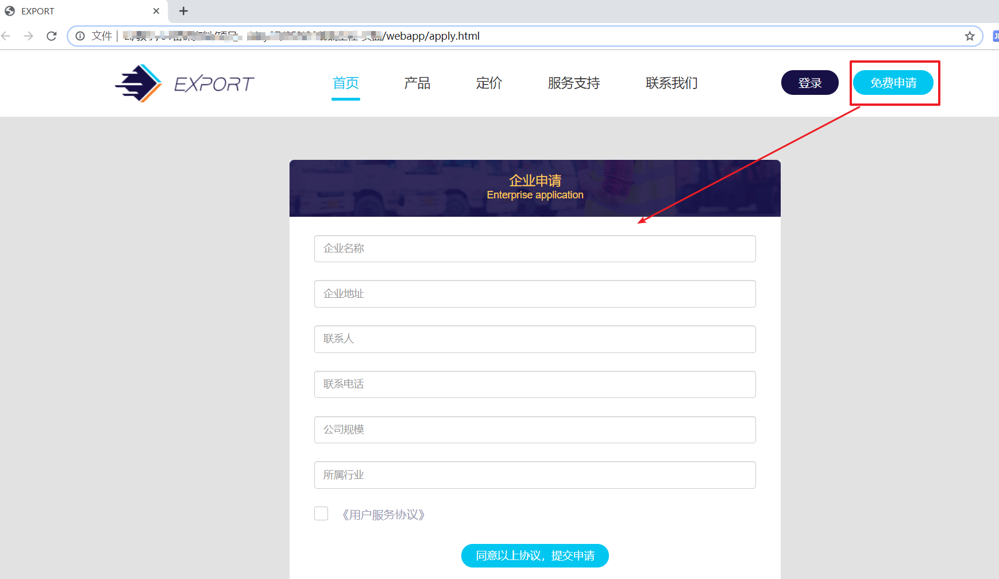
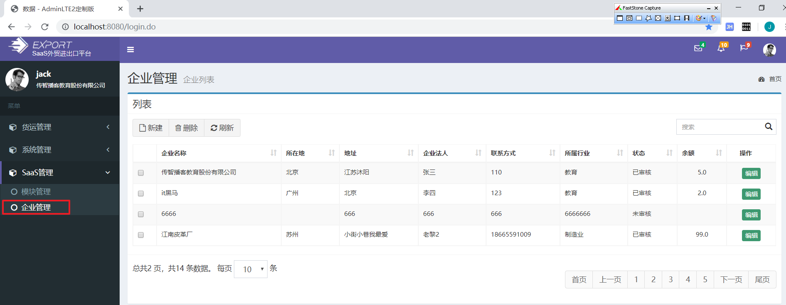
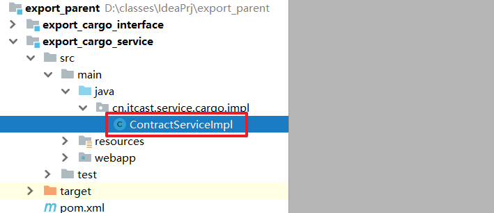

学习目标
- 能够理解购销合同业务
- 能够理解分散计算原理
- 能够实现购销合同的CRUD
- 能够实现购销合同模块下货物的CRUD
- 能够理解购销合同模块下附件CRUD的实现思路
1. 案例：改造企业管理（1）分析
需求
完成网站前端企业申请工作：

分析
目前，后台系统中已经==完成添加企业功能==
现在，需要开发前端系统，完成企业入驻申请功能，与后台功能一样。都是==往企业表保存数据==：
如何解决前端系统企业入驻功能实现？
方案1： 前端系统自己实现企业入驻，此时需要编写domain、dao、service、controller等。
- 存在的问题：==代码冗余 ，前台后台存在一样的代码。==
方案2：通过公共的dubbo服务完成统一的企业操作 ,
2. 案例：改造企业管理（2）创建Dubbo服务接口工程
步骤
- 创建项目：export_company_interface
- 添加依赖 ,实体类的依赖
- 编写对外发布的服务的接口
实现
创建项目：export_company_interface
图1:
添加依赖
<?xml version="1.0" encoding="UTF-8"?> <project xmlns="http://maven.apache.org/POM/4.0.0" xmlns:xsi="http://www.w3.org/2001/XMLSchema-instance" xsi:schemaLocation="http://maven.apache.org/POM/4.0.0 http://maven.apache.org/xsd/maven-4.0.0.xsd"> <parent> <artifactId>export_parent</artifactId> <groupId>cn.itcast</groupId> <version>1.0-SNAPSHOT</version> </parent> <modelVersion>4.0.0</modelVersion> <artifactId>export_company_interface</artifactId> <dependencies> <!--依赖实体类--> <dependency> <groupId>cn.itcast</groupId> <artifactId>export_domain</artifactId> <version>1.0-SNAPSHOT</version> </dependency> </dependencies> </project>编写对外发布的服务的接口 (把企业管理的服务接口拷贝到当前模块中)
package cn.itcast.service.company; import cn.itcast.domain.company.Company; import com.github.pagehelper.PageInfo; import java.util.List; public interface CompanyService { //查找所有的企业 List<Company> findAll(); //添加企业 void save(Company company); //更新企业 void update(Company company); //根据id查找企业 Company findById(String id); //根据id删除企业 void delete(String id); //企业分页 PageInfo<Company> findByPage(Integer pageNum, Integer pageSize); }
3. 案例：接口的实现工程(提供者)
目标
创建dubbo服务接口实现工程，实现接口。
步骤
- 创建项目：export_company_service
- 添加依赖：(服务接口工程、dao工程、dubbo相关依赖)
- 配置web.xml（作用：用于加载dubbo的配置文件，如果使用main函数启动，该步骤可以省略）
- 配置dubbo：applicationContext-dubbo.xml
- 配置事务：applicationContext-tx.xml
- 编写服务接口实现类
- 通过main函数启动服务
实现
创建项目：export_company_service
添加依赖：依赖服务接口工程、dao工程、dubbo相关
<?xml version="1.0" encoding="UTF-8"?> <project xmlns="http://maven.apache.org/POM/4.0.0" xmlns:xsi="http://www.w3.org/2001/XMLSchema-instance" xsi:schemaLocation="http://maven.apache.org/POM/4.0.0 http://maven.apache.org/xsd/maven-4.0.0.xsd"> <parent> <artifactId>export_parent</artifactId> <groupId>cn.itcast</groupId> <version>1.0-SNAPSHOT</version> </parent> <modelVersion>4.0.0</modelVersion> <artifactId>export_company_service</artifactId> <dependencies> <!--依赖企业的服务接口--> <dependency> <groupId>cn.itcast</groupId> <artifactId>export_company_interface</artifactId> <version>1.0-SNAPSHOT</version> </dependency> <!--依赖companyDAo--> <dependency> <groupId>cn.itcast</groupId> <artifactId>export_dao</artifactId> <version>1.0-SNAPSHOT</version> </dependency> <!--dubbo依赖--> <dependency> <groupId>com.alibaba</groupId> <artifactId>dubbo</artifactId> <version>2.6.6</version> <exclusions> <exclusion> <groupId>org.springframework</groupId> <artifactId>spring-web</artifactId> </exclusion> <exclusion> <groupId>org.springframework</groupId> <artifactId>spring-beans</artifactId> </exclusion> <exclusion> <groupId>org.springframework</groupId> <artifactId>spring-context</artifactId> </exclusion> </exclusions> </dependency> <dependency> <groupId>io.netty</groupId> <artifactId>netty-all</artifactId> <version>4.1.32.Final</version> </dependency> <dependency> <groupId>org.apache.curator</groupId> <artifactId>curator-framework</artifactId> <version>4.0.0</version> <exclusions> <exclusion> <groupId>org.apache.zookeeper</groupId> <artifactId>zookeeper</artifactId> </exclusion> </exclusions> </dependency> <dependency> <groupId>org.apache.zookeeper</groupId> <artifactId>zookeeper</artifactId> <version>3.4.7</version> </dependency> <dependency> <groupId>com.github.sgroschupf</groupId> <artifactId>zkclient</artifactId> <version>0.1</version> </dependency> </dependencies> </project>配置web.xml(==省略不写，因为我们通过main函数启动==)
<?xml version="1.0" encoding="UTF-8"?> <web-app xmlns:xsi="http://www.w3.org/2001/XMLSchema-instance" xmlns="http://java.sun.com/xml/ns/javaee" xsi:schemaLocation="http://java.sun.com/xml/ns/javaee http://java.sun.com/xml/ns/javaee/web-app_2_5.xsd" version="2.5"> <!-- 监听器监听其他的spring配置文件 --> <context-param> <param-name>contextConfigLocation</param-name> <param-value>classpath*:spring/applicationContext-*.xml</param-value> </context-param> <listener> <listener-class>org.springframework.web.context.ContextLoaderListener</listener-class> </listener> </web-app>配置dubbo：applicationContext-dubbo.xml
<?xml version="1.0" encoding="UTF-8"?> <beans xmlns="http://www.springframework.org/schema/beans" xmlns:xsi="http://www.w3.org/2001/XMLSchema-instance" xmlns:dubbo="http://code.alibabatech.com/schema/dubbo" xsi:schemaLocation="http://www.springframework.org/schema/beans http://www.springframework.org/schema/beans/spring-beans.xsd http://code.alibabatech.com/schema/dubbo http://code.alibabatech.com/schema/dubbo/dubbo.xsd"> <!--1. 应用名称--> <dubbo:application name="export_company_service"/> <!--2. 注册中心地址--> <dubbo:registry address="zookeeper://192.168.179.128" port="2181"/> <!--3. 协议--> <dubbo:protocol name="dubbo" port="20880"/> <!--4. 包扫描--> <dubbo:annotation package="cn.itcast.service"/> </beans>配置事务：applicationContext-tx.xml
<?xml version="1.0" encoding="UTF-8"?> <beans xmlns="http://www.springframework.org/schema/beans" xmlns:xsi="http://www.w3.org/2001/XMLSchema-instance" xmlns:context="http://www.springframework.org/schema/context" xmlns:tx="http://www.springframework.org/schema/tx" xmlns:aop="http://www.springframework.org/schema/aop" xsi:schemaLocation="http://www.springframework.org/schema/beans http://www.springframework.org/schema/beans/spring-beans.xsd http://www.springframework.org/schema/context http://www.springframework.org/schema/context/spring-context.xsd http://www.springframework.org/schema/tx http://www.springframework.org/schema/tx/spring-tx.xsd http://www.springframework.org/schema/aop http://www.springframework.org/schema/aop/spring-aop.xsd"> <!--1.扫描service包--> <context:component-scan base-package="cn.itcast.service"/> <!--2.创建事务管理器--> <bean id="transactionManager" class="org.springframework.jdbc.datasource.DataSourceTransactionManager"> <property name="dataSource" ref="dataSource"/> </bean> <!--3.配置事务通知规则--> <tx:advice id="ad" transaction-manager="transactionManager"> <tx:attributes> <tx:method name="find*" propagation="SUPPORTS"/> <tx:method name="get*" propagation="SUPPORTS"/> <tx:method name="select*" propagation="SUPPORTS"/> <tx:method name="query*" propagation="SUPPORTS"/> <tx:method name="*" propagation="REQUIRED"/> </tx:attributes> </tx:advice> <!--4.配置切面--> <aop:config> <!--切入点表达式--> <aop:pointcut id="pt" expression="execution(* cn.itcast.service.*.impl.*.*(..))"/> <!--配置通知--> <aop:advisor advice-ref="ad" pointcut-ref="pt"/> </aop:config> </beans>编写服务接口实现类(以前我们已经实现了，把之前编写的拷贝过来即可，只需要@Service换成阿里巴巴即可)
package cn.itcast.service.company.impl; import cn.itcast.dao.company.CompanyDao; import cn.itcast.domain.company.Company; import cn.itcast.service.company.CompanyService; import com.alibaba.dubbo.config.annotation.Service; import com.github.pagehelper.PageHelper; import com.github.pagehelper.PageInfo; import org.springframework.beans.factory.annotation.Autowired; import java.util.List; import java.util.UUID; @Service public class CompanyServiceImpl implements CompanyService { @Autowired private CompanyDao companyDao; //查找所有的企业 @Override public List<Company> findAll() { List<Company> list = companyDao.findAll(); return list; } //添加企业 @Override public void save(Company company) { //注意：这里id没有使用自增，因为是字符串的类型的，字符串类型的id我们可以使用uuid确保唯一性 //使用uuid的好处： 如果我们使用的是int类型的主键，其实容易会溢出，因为int有存储范围。一旦超过就会溢出 company.setId(UUID.randomUUID().toString()); companyDao.save(company); } //更新企业 @Override public void update(Company company) { companyDao.update(company); } //根据id查找企业 @Override public Company findById(String id) { Company company = companyDao.findById(id); return company; } //根据id删除企业 @Override public void delete(String id) { companyDao.delete(id); } //企业分页 @Override public PageInfo<Company> findByPage(Integer pageNum, Integer pageSize) { //设置开始页与页面大小 PageHelper.startPage(pageNum,pageSize); //2. 查询全部 List<Company> list = companyDao.findAll(); //3. 构建一个PageInfo PageInfo<Company> pageInfo = new PageInfo<>(list); return pageInfo; } }通过main函数启动服务
package cn.itcast.provider; import org.springframework.context.support.ClassPathXmlApplicationContext; import java.io.IOException; public class CompanyProvider { public static void main(String[] args) throws IOException { //易错点： 一定要把dao与service的配置文件一起加载。 ClassPathXmlApplicationContext context = new ClassPathXmlApplicationContext("classpath*:spring/applicationContext-*.xml"); //启动 context.start(); System.in.read(); } }
4. 案例：前端系统企业入驻（消费者）
目标
实现前端系统部署、企业入驻功能。
服务提供者已经有了：前端系统就是服务的消费者，调用服务。
步骤
创建项目：export_web_portal
添加依赖： （依赖企业管理service服务接口、依赖dubbo)
拷贝UI资源（拷贝前端页面的静态资源）
配置web.xml（前端控制器，字符过滤器）
配置springmvc.xml( springmvc配置，dubbo配置 )
编写控制器
测试
易错点：Company一定要实现Serializable接口，否则报错。
public class Company implements Serializable{}
dubbo传输的对象如果没有实现可序列化接口，报错：
Caused by: Serialized class Company must implement java.io.Serializable实现
创建项目：export_web_portal
添加依赖： 依赖企业管理service实现工程、依赖dubbo
<?xml version="1.0" encoding="UTF-8"?> <project xmlns="http://maven.apache.org/POM/4.0.0" xmlns:xsi="http://www.w3.org/2001/XMLSchema-instance" xsi:schemaLocation="http://maven.apache.org/POM/4.0.0 http://maven.apache.org/xsd/maven-4.0.0.xsd"> <parent> <artifactId>export_parent</artifactId> <groupId>cn.itcast</groupId> <version>1.0-SNAPSHOT</version> </parent> <modelVersion>4.0.0</modelVersion> <artifactId>export_web_portal</artifactId> <packaging>war</packaging> <dependencies> <!--消费者需要添加依赖：服务接口、dubbo的依赖--> <dependency> <groupId>cn.itcast</groupId> <artifactId>export_company_interface</artifactId> <version>1.0-SNAPSHOT</version> </dependency> <!--dubbo支持包--> <dependency> <groupId>com.alibaba</groupId> <artifactId>dubbo</artifactId> <version>2.6.6</version> <exclusions> <exclusion> <groupId>org.springframework</groupId> <artifactId>spring-web</artifactId> </exclusion> <exclusion> <groupId>org.springframework</groupId> <artifactId>spring-beans</artifactId> </exclusion> <exclusion> <groupId>org.springframework</groupId> <artifactId>spring-context</artifactId> </exclusion> </exclusions> </dependency> <dependency> <groupId>io.netty</groupId> <artifactId>netty-all</artifactId> <version>4.1.32.Final</version> </dependency> <dependency> <groupId>org.apache.curator</groupId> <artifactId>curator-framework</artifactId> <version>4.0.0</version> <exclusions> <exclusion> <groupId>org.apache.zookeeper</groupId> <artifactId>zookeeper</artifactId> </exclusion> </exclusions> </dependency> <dependency> <groupId>org.apache.zookeeper</groupId> <artifactId>zookeeper</artifactId> <version>3.4.7</version> </dependency> <dependency> <groupId>com.github.sgroschupf</groupId> <artifactId>zkclient</artifactId> <version>0.1</version> </dependency> <dependency> <groupId>javax.servlet</groupId> <artifactId>servlet-api</artifactId> <version>2.5</version> </dependency> </dependencies> </project>部署UI资源: 拷贝资料中的ui资源到项目的webapp目录下。
配置web.xml
<?xml version="1.0" encoding="UTF-8"?> <web-app xmlns:xsi="http://www.w3.org/2001/XMLSchema-instance" xmlns="http://java.sun.com/xml/ns/javaee" xsi:schemaLocation="http://java.sun.com/xml/ns/javaee http://java.sun.com/xml/ns/javaee/web-app_2_5.xsd" version="2.5"> <!--配置springmvc的核心控制器--> <servlet> <servlet-name>dispatcherServlet</servlet-name> <servlet-class>org.springframework.web.servlet.DispatcherServlet</servlet-class> <init-param> <param-name>contextConfigLocation</param-name> <param-value>classpath:spring/springmvc.xml</param-value> </init-param> </servlet> <servlet-mapping> <servlet-name>dispatcherServlet</servlet-name> <url-pattern>*.do</url-pattern> </servlet-mapping> <!--字符过滤器--> <filter> <filter-name>characterEncodingFilter</filter-name> <filter-class>org.springframework.web.filter.CharacterEncodingFilter</filter-class> <init-param> <param-name>encoding</param-name> <param-value>utf-8</param-value> </init-param> </filter> <filter-mapping> <filter-name>characterEncodingFilter</filter-name> <url-pattern>/*</url-pattern> </filter-mapping> </web-app>配置springmvc.xml
<?xml version="1.0" encoding="UTF-8"?> <beans xmlns="http://www.springframework.org/schema/beans" xmlns:xsi="http://www.w3.org/2001/XMLSchema-instance" xmlns:context="http://www.springframework.org/schema/context" xmlns:mvc="http://www.springframework.org/schema/mvc" xmlns:dubbo="http://code.alibabatech.com/schema/dubbo" xsi:schemaLocation="http://www.springframework.org/schema/beans http://www.springframework.org/schema/beans/spring-beans.xsd http://www.springframework.org/schema/context http://www.springframework.org/schema/context/spring-context.xsd http://www.springframework.org/schema/mvc http://www.springframework.org/schema/mvc/spring-mvc.xsd http://code.alibabatech.com/schema/dubbo http://code.alibabatech.com/schema/dubbo/dubbo.xsd"> <!--配置springmvc--> <!--视图解释器--> <bean class="org.springframework.web.servlet.view.InternalResourceViewResolver"> <property name="prefix" value="/pages/"/> <property name="suffix" value=".jsp"/> </bean> <!--包扫描--> <context:component-scan base-package="cn.itcast.controller"/> <!--注解驱动--> <mvc:annotation-driven/> <!--配置dubbo--> <!--应用名称--> <dubbo:application name="export_web_portal"/> <!--注册中地址与端口--> <dubbo:registry address="zookeeper://192.168.179.128" port="2181"/> <!--包扫描--> <dubbo:annotation package="cn.itcast.controller"/> </beans>编写控制器
package cn.itcast.controller;
import cn.itcast.domain.company.Company;
import cn.itcast.service.company.CompanyService;
import com.alibaba.dubbo.config.annotation.Reference;
import org.springframework.stereotype.Controller;
import org.springframework.web.bind.annotation.RequestMapping;
import org.springframework.web.bind.annotation.ResponseBody;
@Controller
public class CompanyController {
@Reference
private CompanyService companyService;
@RequestMapping("/apply.do")
@ResponseBody //返回一个普通字符串或者json数据都需要添加 @ResponseBody
public String apply(Company company){
try {
company.setState(0); //前台入驻企业需要审核，所以先把状态修改为0
companyService.save(company);
return "1"; //代表成功
} catch (Exception e) {
e.printStackTrace();
return "0"; //代表失败
}
}
}
- 测试
第一步：访问前端系统首页
第二步：点击免费申请
第三步： 填写数据，保存。保存后的页面如下：
==易错点：Company一定要实现Serializable接口，否则报错。==
5. 案例：改造企业管理（5）后台管理系统改造
需求
之前已经抽取了export_company_service服务工程，实现企业管理。现在需要改造SaasExport，通过dubbo形式调用企业服务，这样就不需要在后台管理中再去写企业管理的service接口与实现了。

步骤
改造SaasExport后台系统，需要在export_web_manager完成以下的操作：
- pom.xml 添加dubbo相关依赖
- springmvc.xml添加dubbo配置
- 删除后台系统export_service_system中的CompanyService与CompanyServiceImpl实现
- 修改CompanyController，把@Autowired直接改为dubbo支持的@Reference注解
- 测试CURD
实现
pom.xml 添加dubbo相关依赖
<?xml version="1.0" encoding="UTF-8"?> <project xmlns="http://maven.apache.org/POM/4.0.0" xmlns:xsi="http://www.w3.org/2001/XMLSchema-instance" xsi:schemaLocation="http://maven.apache.org/POM/4.0.0 http://maven.apache.org/xsd/maven-4.0.0.xsd"> <parent> <artifactId>export_parent</artifactId> <groupId>cn.itcast</groupId> <version>1.0-SNAPSHOT</version> </parent> <modelVersion>4.0.0</modelVersion> <artifactId>export_web_manager</artifactId> <packaging>war</packaging> <dependencies> <!--依赖service--> <dependency> <groupId>cn.itcast</groupId> <artifactId>export_system_service</artifactId> <version>1.0-SNAPSHOT</version> </dependency> <!--依赖企业的接口--> <dependency> <groupId>cn.itcast</groupId> <artifactId>export_company_interface</artifactId> <version>1.0-SNAPSHOT</version> </dependency> <!--依赖dubbo--> <dependency> <groupId>com.alibaba</groupId> <artifactId>dubbo</artifactId> <version>2.6.6</version> <exclusions> <exclusion> <groupId>org.springframework</groupId> <artifactId>spring-web</artifactId> </exclusion> <exclusion> <groupId>org.springframework</groupId> <artifactId>spring-beans</artifactId> </exclusion> <exclusion> <groupId>org.springframework</groupId> <artifactId>spring-context</artifactId> </exclusion> </exclusions> </dependency> <dependency> <groupId>io.netty</groupId> <artifactId>netty-all</artifactId> <version>4.1.32.Final</version> </dependency> <dependency> <groupId>org.apache.curator</groupId> <artifactId>curator-framework</artifactId> <version>4.0.0</version> <exclusions> <exclusion> <groupId>org.apache.zookeeper</groupId> <artifactId>zookeeper</artifactId> </exclusion> </exclusions> </dependency> <dependency> <groupId>org.apache.zookeeper</groupId> <artifactId>zookeeper</artifactId> <version>3.4.7</version> </dependency> <dependency> <groupId>com.github.sgroschupf</groupId> <artifactId>zkclient</artifactId> <version>0.1</version> </dependency> </dependencies> </project>springmvc.xml添加dubbo配置
<?xml version="1.0" encoding="UTF-8"?> <beans xmlns="http://www.springframework.org/schema/beans" xmlns:xsi="http://www.w3.org/2001/XMLSchema-instance" xmlns:context="http://www.springframework.org/schema/context" xmlns:mvc="http://www.springframework.org/schema/mvc" xmlns:aop="http://www.springframework.org/schema/aop" xmlns:dubbo="http://dubbo.apache.org/schema/dubbo" xsi:schemaLocation="http://www.springframework.org/schema/beans http://www.springframework.org/schema/beans/spring-beans.xsd http://www.springframework.org/schema/context http://www.springframework.org/schema/context/spring-context.xsd http://www.springframework.org/schema/mvc http://www.springframework.org/schema/mvc/spring-mvc.xsd http://www.springframework.org/schema/aop http://www.springframework.org/schema/aop/spring-aop.xsd http://dubbo.apache.org/schema/dubbo http://dubbo.apache.org/schema/dubbo/dubbo.xsd"> <!--视图解析器--> <bean class="org.springframework.web.servlet.view.InternalResourceViewResolver"> <!--配置前缀 ， WEB-INF目录是一个受保护的目录，外界通过浏览器没法访问web-inf目录下的内容， 这里的内容只能通过请求转发到该目录的资源--> <property name="prefix" value="/WEB-INF/pages/"/> <!--配置后缀--> <property name="suffix" value=".jsp"/> </bean> <!--包扫描--> <context:component-scan base-package="cn.itcast.web"/> <!--注解驱动--> <!--==============================注册类型转换器=============================--> <!--4. 把自定义转换器的对象交给转换器的工厂--> <bean id="converterFactory" class="org.springframework.context.support.ConversionServiceFactoryBean"> <property name="converters"> <set> <ref bean="stringToDateConverter"/> </set> </property> </bean> <!--5. 把转换器工厂交给注解驱动去启动 ， 记住： 删除上面注解驱动--> <mvc:annotation-driven conversion-service="converterFactory"/> <!--开启aop的注解扫描，扫描@Aspect、@pointCut、@Around这些注解--> <aop:aspectj-autoproxy/> <!--使用spring整合dubbo--> <!--配置dubbo--> <!--应用名称--> <dubbo:application name="export_web_manager"/> <!--注册中地址与端口--> <dubbo:registry address="zookeeper://192.168.179.128" port="2181"/> <!--包扫描--> <dubbo:annotation package="cn.itcast.web.controller"/> </beans>删除后台系统export_service_system中的CompanyService与CompanyServiceImpl实现
（下面红色选中的部分也可以删除）
修改CompanyController，把@Autowired直接改为dubbo支持的@Reference注解
测试CURD
6. MyBatis逆向工程（1）反向生成
目标
创建MyBatis逆向工程，自动根据数据库表生成实体类、dao接口、接口映射文件。
逆向工程的简介
- 正向工程 : 在软件开发的过程中有些人是先设计实体类、dao最后才设计数据库，这个过程称作为正向工程。
- 逆向工程: 先设计数据库，然后再设计实体类、dao，这个过程称作为逆向工程。
==逆向工程有专门工具帮我们，我们的学习目标学会如何使用该工具，不需要我们自己去写这个工具==
步骤
- 创建项目：mybatis_generate
- 配置pom.xml, 添加依赖
- 配置Jdbc.properties
- 配置mybatis-generator-config.xml， 指定表及实体类路径、映射文件路径等。
- 编写测试类
实现
创建项目：mybatis_generate
配置pom.xml, 添加依赖
<?xml version="1.0" encoding="UTF-8"?> <project xmlns="http://maven.apache.org/POM/4.0.0" xmlns:xsi="http://www.w3.org/2001/XMLSchema-instance" xsi:schemaLocation="http://maven.apache.org/POM/4.0.0 http://maven.apache.org/xsd/maven-4.0.0.xsd"> <modelVersion>4.0.0</modelVersion> <groupId>cn.itcast</groupId> <artifactId>mybatis_generate</artifactId> <version>1.0-SNAPSHOT</version> <dependencies> <!--mybatis逆向工程核心包--> <dependency> <groupId>org.mybatis.generator</groupId> <artifactId>mybatis-generator-core</artifactId> <version>1.3.7</version> </dependency> <!--mysql驱动--> <dependency> <groupId>mysql</groupId> <artifactId>mysql-connector-java</artifactId> <version>5.1.6</version> </dependency> <!--mybatis核心包--> <dependency> <groupId>org.mybatis</groupId> <artifactId>mybatis</artifactId> <version>3.4.5</version> </dependency> </dependencies> <build> <plugins> <plugin> <groupId>org.mybatis.generator</groupId> <artifactId>mybatis-generator-maven-plugin</artifactId> <version>1.3.2</version> <configuration> <configurationFile>src/main/resources/mybatis-generator-config.xml</configurationFile> <verbose>true</verbose> <overwrite>true</overwrite> </configuration> </plugin> </plugins> </build> </project>配置Jdbc.properties
jdbc.path=D:\\soft\\maven2\\repository\\mysql\\mysql-connector-java\\5.1.6\\mysql-connector-java-5.1.6.jar jdbc.driver=com.mysql.jdbc.Driver jdbc.url=jdbc:mysql://localhost:3306/saas-export jdbc.username=root jdbc.password=root配置mybatis-generator-config.xml， 指定表及实体类路径、映射文件路径等。
如下配置不需要自己写，直接从资料拷贝后修改targetPackage、targetProject、tableName、domainObjectName、mapperName 修改后的内容如下：
<?xml version="1.0" encoding="UTF-8" ?> <!DOCTYPE generatorConfiguration PUBLIC "-//mybatis.org//DTD MyBatis Generator Configuration 1.0//EN" "http://mybatis.org/dtd/mybatis-generator-config_1_0.dtd" > <generatorConfiguration> <!--导入属性配置--> <properties resource="jdbc.properties"></properties> <!--指定特定数据库的jdbc驱动jar包的位置--> <classPathEntry location="${jdbc.path}"/> <context id="context" targetRuntime="MyBatis3"> <!-- 是否去除自动生成的注释 true：是 ： false:否 --> <commentGenerator> <property name="suppressAllComments" value="false"/> <property name="suppressDate" value="true"/> </commentGenerator> <!--数据库连接的信息：驱动类、连接地址、用户名、密码 --> <jdbcConnection driverClass="${jdbc.driver}" connectionURL="${jdbc.url}" userId="${jdbc.username}" password="${jdbc.password}"/> <!-- 默认false，把JDBC DECIMAL 和 NUMERIC 类型解析为 Integer，为 true时把JDBC DECIMAL 和 NUMERIC 类型解析为java.math.BigDecimal --> <javaTypeResolver> <property name="forceBigDecimals" value="false"/> </javaTypeResolver> <!--指定包名生成实体类 以及生成的地址 （可以自定义地址，如果路径不存在会自动创建） targetPackage: 存储实体类的包名 targetProject： 存储实体类的位置 --> <javaModelGenerator targetPackage="cn.itcast.domain.cargo" targetProject="H:\145project\mybatis_generate\src\main\java"> <!-- enableSubPackages:是否让schema作为包的后缀 --> <property name="enableSubPackages" value="false"/> <!-- 从数据库返回的值被清理前后的空格 --> <property name="trimStrings" value="true"/> </javaModelGenerator> <!--Mapper映射文件生成所在的目录 为每一个数据库的表生成对应的mapper文件 targetPackage :存储mapper.xml文件的包名 targetProject: 存储mapper.xml文件的路径 --> <sqlMapGenerator targetPackage="cn.itcast.dao.cargo" targetProject="H:\145project\mybatis_generate\src\main\resources"> <!-- enableSubPackages:是否让schema作为包的后缀 --> <property name="enableSubPackages" value="false"/> </sqlMapGenerator> <!-- 客户端代码，生成易于使用的针对Model对象和XML配置文件 的代码 type="ANNOTATEDMAPPER",生成Java Model 和基于注解的Mapper对象 type="MIXEDMAPPER",生成基于注解的Java Model 和相应的Mapper对象 type="XMLMAPPER",生成SQLMap XML文件和独立的Mapper接口 存储dao接口的位置 --> <javaClientGenerator targetPackage="cn.itcast.dao.cargo" targetProject="H:\145project\mybatis_generate\src\main\java" type="XMLMAPPER"> <!-- enableSubPackages:是否让schema作为包的后缀 --> <property name="enableSubPackages" value="false"/> </javaClientGenerator> <!-- 指定数据库表 一个table标签对应一张表 --> <table schema="saas-export" tableName="co_factory" domainObjectName="Factory" mapperName="FactoryDao" enableCountByExample="false" enableDeleteByExample="false" enableSelectByExample="true" enableUpdateByExample="false"/> </context> </generatorConfiguration>运行测试类，生成实体类与Dao（测试类是拷贝过来）
package cn.itcast.test; import org.mybatis.generator.api.MyBatisGenerator; import org.mybatis.generator.config.Configuration; import org.mybatis.generator.config.xml.ConfigurationParser; import org.mybatis.generator.internal.DefaultShellCallback; import java.io.InputStream; import java.util.ArrayList; import java.util.List; /** * */ public class GeneratorSqlMapTest { public void generator() throws Exception{ List<String> warnings = new ArrayList<String>(); boolean overwrite = true; //指定 逆向工程配置文件 InputStream in = GeneratorSqlMapTest.class.getClassLoader().getResourceAsStream("mybatis-generator-config.xml"); ConfigurationParser cp = new ConfigurationParser(warnings); Configuration config = cp.parseConfiguration(in); DefaultShellCallback callback = new DefaultShellCallback(overwrite); MyBatisGenerator myBatisGenerator = new MyBatisGenerator(config, callback, warnings); myBatisGenerator.generate(null); in.close(); } public static void main(String[] args) throws Exception { try { GeneratorSqlMapTest generatorSqlmap = new GeneratorSqlMapTest(); generatorSqlmap.generator(); } catch (Exception e) { e.printStackTrace(); } } }
- 编写测试类
测试
7. MyBatis逆向工程（2）拷贝生成结果到项目
目标
拷贝生成的domain、dao、接口映射文件到项目中。
实现
图1：拷贝domain
图2：拷贝dao
图3：拷贝映射

8. MyBatis逆向工程（3）生成方法介绍
目标
- 查看逆向工程自动生成的dao的接口各个方法；
- 测试动态更新方法；
- 测试查询方法
测试
package cn.itcast.test;
import cn.itcast.dao.cargo.FactoryDao;
import cn.itcast.domain.cargo.Factory;
import cn.itcast.domain.cargo.FactoryExample;
import org.junit.Test;
import org.junit.runner.RunWith;
import org.springframework.beans.factory.annotation.Autowired;
import org.springframework.test.context.ContextConfiguration;
import org.springframework.test.context.junit4.SpringJUnit4ClassRunner;
import java.util.Date;
import java.util.List;
import java.util.UUID;
@RunWith(SpringJUnit4ClassRunner.class)
@ContextConfiguration("classpath:spring/applicationContext-dao.xml")
public class FactoryTest {
@Autowired
private FactoryDao factoryDao ;
/*
测试增 、 删除、修改
*/
@Test
public void test01(){
//selectByPrimaryKey 根据主键查找
// Factory factory = factoryDao.selectByPrimaryKey("1");
// System.out.println("找到对象："+ factory);
/*
重点： 方法带Selective与不带Selective的区别
*/
Factory factory2 = new Factory();
factory2.setId("110");
factory2.setFactoryName("传智IT工厂");
factory2.setCtype("学生");
factory2.setCreateTime(new Date());
factory2.setUpdateTime(new Date());
//insert方法的特点：不管你实体对象的属性是否有值，全插入，没有值的插入null。
// factoryDao.insert(factory2);
//insertSelective方法特点：生成的sql语句只会插入实体类非空属性，
factoryDao.insertSelective(factory2);
}
/*
重点掌握： selectByExample方法的使用
*/
@Test
public void test02(){
//创建FactoryExample ，FactoryExample的作用就是封装查询条件.
FactoryExample factoryExample = new FactoryExample();
//真正存储查询条件的是FactoryExample里面Criteria对象
FactoryExample.Criteria criteria = factoryExample.createCriteria();
//把条件封装到criteria
// criteria.andCtypeEqualTo("货物");
//找祁县的工厂
criteria.andFullNameLike("%祁县%");
List<Factory> factoryList = factoryDao.selectByExample(factoryExample);
System.out.println("查询的对象："+factoryList);
}
}
9. 货运模块-需求分析
需求
老钟开了一个外贸公司，特朗普向老钟订购了一批口罩。 老钟需要与特朗普签订合同，这个合同就是一个购销合同。
外贸公司的销售和海外客户签订订单（合同），客户订单中的货物，公司就联系这些（多个）厂家来生产，和生产厂家签订合同，这个合同就叫“购销合同”。==购销合同的内容主要由三部分组成，购销合同的主信息，和多个货物的信息，和多个附件的信息。==（附件实际就是货物）
货运模块
购销合同的组成：
购销合同 co_contract
货物 co_contract_product 口罩
附件 co_ext_cproduct 购买货物的时候使用的一些包装材料 + 纸箱 + 泡沫纸
表结构
-- 购销合同表
SELECT * FROM co_contract;
-- 货物表
SELECT * FROM co_contract_product;
-- 附件表
SELECT * FROM co_ext_cproduct;
-- 厂家表
SELECT * FROM co_factory;分散计算思想（为了性能提高）
如果没有分散计算，在查询购销合同总金额时，就需要关联加载购销合同下的所有货物，并要加载所有货物下的所有附件，这样可能实现购销合同总金额查询消耗时间太多，而用户等不起，此时就可以在平时添加货物时，添加附件时，分别计算出货物总金额，附件总金额 ，再更新购销合同总金额 ，这样就相当于将一次集中计算的工作量分散到平时的多次计算过程中，所以查询购销合同总金额时速度就会很快。
优点：提高了页面数据的检索速度
缺点:就是代码的编写量和维护工作量急剧上升
-- 购销合同表
SELECT * FROM co_contract; 购销合同总金额= 货物的总价+附件的总价
-- 货物表
SELECT * FROM co_contract_product;
cnumber(数量)
price(单价)
amonut（货物总价）
-- 附件表
SELECT * FROM co_ext_cproduct;
cnumber(数量)
price(单价)
amonut（货物总价）
需求： 查看所有购销合同的总价， 你们的设计方案？
方案1： 购销合同表不记录购销合同总价字段 ， 在展示购销合同列表到时候取出商品与附件的总价动态去计算。 （弊端：每次查看购销合同的时候动态计算的，所以效率低，用户的体验不太好）
方案2： 在购销合同表中添加total_amonut字段（冗余字段）记录购销合同的总价，以后每次你们增删改货物、附件的时候我们都重新计算购销合同的总价，并且更新到合同表中。 （弊端：每次增删改货物、附件的时候都需要重新计算总价格 ， 优点：展示购销合同总价的时候不需要当场计算，效率高，用户体验好）
哪个方案在查看购销合同时候的效率高？ 方案二。 方案二使用的就是分散计算的思想.
分散计算的思想： 把统计的工作分散到每次增删改中.
分散计算的思想的应用场景： 以后如果你的客户对某个数据的展示效率要求比较高的时候，那么你就可以
维护一个冗余字段，然后把这个数据的统计统计分散到对应环节中。
10. 购销合同模块CRUD（1）domain
分析
工程依赖关系如下：
编写domain
== 注意：如果你们自己使用逆向工程去生成实体类的时候，一定要实现serializable接口。（逆向工程和我们资料的区别就在于没有注释，与没有实现Serializable接口 ,不单止实体类要实现Serializable，并且条件对象，Example， Criteria 这两个类也需要实现Serializable接口==
参考
先引入BaseEntity到项目中： BaseEntity用来抽取所有domain公用的字段
把实体类中的子目录cargo中的文件，引入到项目中
11. 购销合同模块CRUD（2）dao
dao接口
引入资源：
dao接口映射
引入资源：
12. 购销合同模块CRUD（3）创建service接口服务工程
步骤
- 创建项目：export_cargo_interface
- 添加依赖：domain
- 编写业务服务接口
实现
创建项目：export_cargo_interface
添加依赖：domain
编写业务服务接口（把服务接口拷贝进来）
图1：编写service接口
图2：购销合同service
package cn.itcast.service.cargo; import cn.itcast.domain.cargo.Contract; import cn.itcast.domain.cargo.ContractExample; import com.github.pagehelper.PageInfo; import java.util.List; /** * 购销合同模块 */ public interface ContractService { /** * 分页查询 * @param contractExample 分页查询的参数 * @param pageNum 当前页 * @param pageSize 页大小 * @return */ PageInfo<Contract> findByPage(ContractExample contractExample, int pageNum, int pageSize); /** * 查询所有 */ List<Contract> findAll(ContractExample contractExample); /** * 根据id查询 * @param id * @return */ Contract findById(String id); /** * 新增 */ void save(Contract contract); /** * 修改 */ void update(Contract contract); /** * 删除部门 */ void delete(String id); }图3：货物service
package cn.itcast.service.cargo; import cn.itcast.domain.cargo.ContractProduct; import cn.itcast.domain.cargo.ContractProductExample; import com.github.pagehelper.PageInfo; import java.util.List; /** * 购销合同货物模块 */ public interface ContractProductService { /** * 分页查询 * @param ContractProductExample 分页查询的参数 * @param pageNum 当前页 * @param pageSize 页大小 * @return */ PageInfo<ContractProduct> findByPage( ContractProductExample ContractProductExample, int pageNum, int pageSize); /** * 查询所有 */ List<ContractProduct> findAll(ContractProductExample ContractProductExample); /** * 根据id查询 */ ContractProduct findById(String id); /** * 新增 */ void save(ContractProduct contractProduct); /** * 修改 */ void update(ContractProduct contractProduct); /** * 删除部门 */ void delete(String id); }图4：附件service
package cn.itcast.service.cargo; import cn.itcast.domain.cargo.ExtCproduct; import cn.itcast.domain.cargo.ExtCproductExample; import com.github.pagehelper.PageInfo; import java.util.List; /** * 购销合同货物附件模块 */ public interface ExtCproductService { /** * 分页查询 */ PageInfo<ExtCproduct> findByPage( ExtCproductExample extCproductExample, int pageNum, int pageSize); /** * 查询所有 */ List<ExtCproduct> findAll(ExtCproductExample extCproductExample); /** * 根据id查询 * @param id * @return */ ExtCproduct findById(String id); /** * 新增 */ void save(ExtCproduct extCproduct); /** * 修改 */ void update(ExtCproduct extCproduct); /** * 删除部门 */ void delete(String id); }图5：工厂service
package cn.itcast.service.cargo; import cn.itcast.domain.cargo.Factory; import cn.itcast.domain.cargo.FactoryExample; import com.github.pagehelper.PageInfo; import java.util.List; /** * 工厂模块 */ public interface FactoryService { /** * 分页查询 */ PageInfo<Factory> findByPage( FactoryExample FactoryExample, int pageNum, int pageSize); /** * 查询所有 */ List<Factory> findAll(FactoryExample FactoryExample); /** * 根据id查询 * @param id * @return */ Factory findById(String id); /** * 新增 */ void save(Factory Factory); /** * 修改 */ void update(Factory Factory); /** * 删除部门 */ void delete(String id); }
13. 购销合同模块CRUD（4）创建service接口实现工程（货运模块的提供者）
步骤
- 创建项目：export_cargo_service
- 添加依赖：依赖dao、service接口工程、dubbo依赖
- 配置web.xml （可有可无）
- 配置applicationContext-dubbo.xml
- 编写ContractServiceImpl， 服务实现类
- 编写ContractProvided， 启动服务
实现
创建项目：export_cargo_service
添加依赖：依赖dao、service接口工程、dubbo依赖
<?xml version="1.0" encoding="UTF-8"?> <project xmlns="http://maven.apache.org/POM/4.0.0" xmlns:xsi="http://www.w3.org/2001/XMLSchema-instance" xsi:schemaLocation="http://maven.apache.org/POM/4.0.0 http://maven.apache.org/xsd/maven-4.0.0.xsd"> <parent> <artifactId>export_parent</artifactId> <groupId>cn.itcast</groupId> <version>1.0-SNAPSHOT</version> </parent> <modelVersion>4.0.0</modelVersion> <artifactId>export_cargo_service</artifactId> <dependencies> <!--服务接口--> <dependency> <groupId>cn.itcast</groupId> <artifactId>export_cargo_interface</artifactId> <version>1.0-SNAPSHOT</version> </dependency> <!--dao--> <dependency> <groupId>cn.itcast</groupId> <artifactId>export_dao</artifactId> <version>1.0-SNAPSHOT</version> </dependency> <!--dubbo--> <dependency> <groupId>com.alibaba</groupId> <artifactId>dubbo</artifactId> <version>2.6.6</version> <exclusions> <exclusion> <groupId>org.springframework</groupId> <artifactId>spring-web</artifactId> </exclusion> <exclusion> <groupId>org.springframework</groupId> <artifactId>spring-beans</artifactId> </exclusion> <exclusion> <groupId>org.springframework</groupId> <artifactId>spring-context</artifactId> </exclusion> </exclusions> </dependency> <dependency> <groupId>io.netty</groupId> <artifactId>netty-all</artifactId> <version>4.1.32.Final</version> </dependency> <dependency> <groupId>org.apache.curator</groupId> <artifactId>curator-framework</artifactId> <version>4.0.0</version> <exclusions> <exclusion> <groupId>org.apache.zookeeper</groupId> <artifactId>zookeeper</artifactId> </exclusion> </exclusions> </dependency> <dependency> <groupId>org.apache.zookeeper</groupId> <artifactId>zookeeper</artifactId> <version>3.4.7</version> </dependency> <dependency> <groupId>com.github.sgroschupf</groupId> <artifactId>zkclient</artifactId> <version>0.1</version> </dependency> </dependencies> </project>配置web.xml (==main函数启动不需要编写==)
<?xml version="1.0" encoding="UTF-8"?> <web-app xmlns:xsi="http://www.w3.org/2001/XMLSchema-instance" xmlns="http://java.sun.com/xml/ns/javaee" xsi:schemaLocation="http://java.sun.com/xml/ns/javaee http://java.sun.com/xml/ns/javaee/web-app_2_5.xsd" version="2.5"> <!--加载dubbo配置--> <context-param> <param-name>contextConfigLocation</param-name> <param-value>classpath*:spring/applicationContext-dubbo.xml</param-value> </context-param> <listener> <listener-class>org.springframework.web.context.ContextLoaderListener</listener-class> </listener> </web-app>配置applicationContext-dubbo.xml
<?xml version="1.0" encoding="UTF-8"?> <beans xmlns="http://www.springframework.org/schema/beans" xmlns:xsi="http://www.w3.org/2001/XMLSchema-instance" xmlns:dubbo="http://code.alibabatech.com/schema/dubbo" xsi:schemaLocation="http://www.springframework.org/schema/beans http://www.springframework.org/schema/beans/spring-beans.xsd http://code.alibabatech.com/schema/dubbo http://code.alibabatech.com/schema/dubbo/dubbo.xsd"> <!--1. 应用名称--> <dubbo:application name="export_cargo_service"/> <!--2. 注册中心地址--> <dubbo:registry address="zookeeper://192.168.179.128" port="2181"/> <!--3. 协议--> <dubbo:protocol name="dubbo" port="20881"/> <!--4. 包扫描--> <dubbo:annotation package="cn.itcast.service"/> </beans>编写ContractServiceImpl， 服务实现类

package cn.itcast.service.cargo.impl; import cn.itcast.dao.cargo.ContractDao; import cn.itcast.domain.cargo.Contract; import cn.itcast.domain.cargo.ContractExample; import cn.itcsat.service.cargo.ContractService; import com.alibaba.dubbo.config.annotation.Service; import com.github.pagehelper.PageHelper; import com.github.pagehelper.PageInfo; import org.springframework.beans.factory.annotation.Autowired; import java.util.Date; import java.util.List; import java.util.UUID; @Service public class ContractServiceImpl implements ContractService { @Autowired private ContractDao contractDao; /* 购销合同分页查询 */ @Override public PageInfo<Contract> findByPage(ContractExample contractExample, int pageNum, int pageSize) { PageHelper.startPage(pageNum,pageSize); //查询数据 List<Contract> contractList = contractDao.selectByExample(contractExample); //得到购销合同页面 PageInfo<Contract> pageInfo = new PageInfo<>(contractList); return pageInfo; } /* 购销合同条件查询 */ @Override public List<Contract> findAll(ContractExample contractExample) { List<Contract> contractList = contractDao.selectByExample(contractExample); return contractList; } /* 根据id查询购销合同 */ @Override public Contract findById(String id) { return contractDao.selectByPrimaryKey(id); } /* 添加购销合同 */ @Override public void save(Contract contract) { contract.setId(UUID.randomUUID().toString()); //有两个字段不能为空 contract.setCreateTime(new Date()); contract.setUpdateTime(new Date()); contractDao.insertSelective(contract); } /* 更新购销合同 */ @Override public void update(Contract contract) { //修改更新的时间 contract.setUpdateTime(new Date()); contractDao.updateByPrimaryKeySelective(contract); } /* 根据主键删除购销合同 */ @Override public void delete(String id) { contractDao.deleteByPrimaryKey(id); } }编写ContractProvided， 启动服务
package cn.itcast.provider; import org.springframework.context.support.ClassPathXmlApplicationContext; import java.io.IOException; public class ContractProvider { public static void main(String[] args) throws IOException { //易错点： 一定要把dao与service的配置文件一起加载。 ClassPathXmlApplicationContext context = new ClassPathXmlApplicationContext("classpath*:spring/applicationContext-*.xml"); //启动 context.start(); System.in.read(); } }
14. 购销合同模块CRUD（5）SaasExport后台系统
目标
- 准备dubbo运行环境
- 编写控制器ContractController， 调用服务接口
实现
准备dubbo运行环境
添加依赖： 依赖货运的service接口工程
检查web.xml配置（==已经完成==）
检查dubbo配置（==已经完成==）
编写控制器ContractController， 调用服务接口
package cn.itcast.web.controller.cargo; import cn.itcast.domain.cargo.Contract; import cn.itcast.domain.cargo.ContractExample; import cn.itcast.web.controller.BaseController; import cn.itcsat.service.cargo.ContractService; import com.alibaba.dubbo.config.annotation.Reference; import com.github.pagehelper.PageInfo; import org.springframework.stereotype.Controller; import org.springframework.util.StringUtils; import org.springframework.web.bind.annotation.RequestMapping; import org.springframework.web.bind.annotation.RequestParam; @Controller @RequestMapping("/cargo/contract") public class ContractController extends BaseController { @Reference private ContractService contractService; @RequestMapping("/list") public String list(@RequestParam(defaultValue = "1") Integer pageNum,@RequestParam(defaultValue = "5") Integer pageSize){ ContractExample contractExample = new ContractExample(); //今天购销合同我们暂时不涉及任何的条件，明天我再做细粒度权限控制 //根据购销合同的创建时间去排序 contractExample.setOrderByClause("create_time desc"); //desc 降序、 asc 升序 PageInfo<Contract> pageInfo = contractService.findByPage(contractExample, pageNum, pageSize); //存储到请求域中 request.setAttribute("pageInfo",pageInfo); //请求转到到页面 return "cargo/contract/contract-list"; } /* 作用： 进入购销合同添加页面 url: /contract/toAdd.do 参数：没有 返回值 : contract-add */ @RequestMapping("/toAdd") public String toAdd(){ return "cargo/contract/contract-add"; } /* 作用：添加购销合同，更新购销合同 url: /contract/edit.do 参数：Contract 购销合同对象信息 返回值 : 购销合同列表页面 */ @RequestMapping("/edit") public String edit(Contract contract){ //购销合同的创建人 contract.setCreateBy(getLoginUser().getId()); //购销合同的创建人所属的部门 contract.setCreateDept(getLoginUser().getDeptId()); //购销合同的创建人所属的企业id contract.setCompanyId(getLoginUserCompanyId()); //购销合同的创建人所属的企业名称 contract.setCompanyName(getLoginUserCompanyName()); if(StringUtils.isEmpty(contract.getId())){ //判断一个变量是否为空串,相当于上面的语句 //添加 contractService.save(contract); }else{ //更新 contractService.update(contract); } return "redirect:/cargo/contract/list.do"; //访问上面的list方法 } /* 作用 ： 进入更新购销合同的页面 url : /contract/toUpdate.do?id=5b810ce0-be2b-4450-9fd3-d0856dd86a5f 参数 : 购销合同id 返回值 :contract-update */ @RequestMapping("/toUpdate") public String toUpdate(String id){ //1. 根据购销合同的id查找购销合同 Contract contract = contractService.findById(id); //2. 存储到request域中 request.setAttribute("contract",contract); //3. 请求转发到contract-update页面 return "cargo/contract/contract-update"; } /* 作用 ：删除 url :/contract/delete.do?id=02e1da04-43f8-42e1-a4c2-66e162c6f4a5 参数 : id 购销合同id 返回值 : 购销合同列表 */ @RequestMapping("/delete") public String delete(String id){ contractService.delete(id); return "redirect:/cargo/contract/list.do"; } }修改contract-list.jsp页面取值，测试
修改contract-list.jsp页面取值
测试: 新建、删除、编辑
15. 购销合同模块CRUD（6）完善购销合同
目标
- 实现查看购销合同
- 实现修改购销合同状态： 提交、取消
步骤
- 控制器添加3个方法，实现查看、提交、取消
- 测试
实现
控制器添加3个方法，实现查看、提交、取消
package cn.itcast.web.controller.cargo; import cn.itcast.domain.cargo.Contract; import cn.itcast.domain.cargo.ContractExample; import cn.itcast.service.cargo.ContractService; import cn.itcast.web.controller.BaseController; import com.alibaba.dubbo.config.annotation.Reference; import com.github.pagehelper.PageInfo; import org.apache.shiro.authz.annotation.RequiresPermissions; import org.springframework.stereotype.Controller; import org.springframework.ui.Model; import org.springframework.util.StringUtils; import org.springframework.web.bind.annotation.RequestMapping; import org.springframework.web.bind.annotation.RequestParam; import java.util.Date; @Controller @RequestMapping("/cargo/contract") public class ContractController extends BaseController { @Reference private ContractService contractService; /* 作用 ： 进入更新购销合同详情页面 url : /cargo/contract/toView.do?id=dd63eb3c-6d4e-4a85-9c37-fcfda1998c1d 参数 : 购销合同id 返回值 :contract-view.jsp */ @RequestMapping("/toView") public String toView(String id){ //1. 根据购销合同的id查找购销合同 Contract contract = contractService.findById(id); //2. 存储到request域中 request.setAttribute("contract",contract); //3. 请求转发到contract-update页面 return "cargo/contract/contract-view"; } /* 作用 ： 购销合同提交 url : /cargo/contract/submit.do?id=dd63eb3c-6d4e-4a85-9c37-fcfda1998c1d 参数 : 购销合同id 返回值 :购销合同列表页面 */ @RequestMapping("/submit") public String submit(String id){ //1. 根据购销合同的id查找购销合同 Contract contract = contractService.findById(id); //2. 修改购销合同的状态为1,更新购销合同 contract.setState(1); contractService.update(contract); //3. 返回购销合同列表页面 return "redirect:/cargo/contract/list.do"; } /* 作用 ： 购销合同取消 url : /cargo/contract/submit.do?id=dd63eb3c-6d4e-4a85-9c37-fcfda1998c1d 参数 : 购销合同id 返回值 :购销合同列表页面 */ @RequestMapping("/cancel") public String cancel(String id){ //1. 根据购销合同的id查找购销合同 Contract contract = contractService.findById(id); //2. 修改购销合同的状态为0,更新购销合同 contract.setState(0); contractService.update(contract); //3. 返回购销合同列表页面 return "redirect:/cargo/contract/list.do"; } }测试